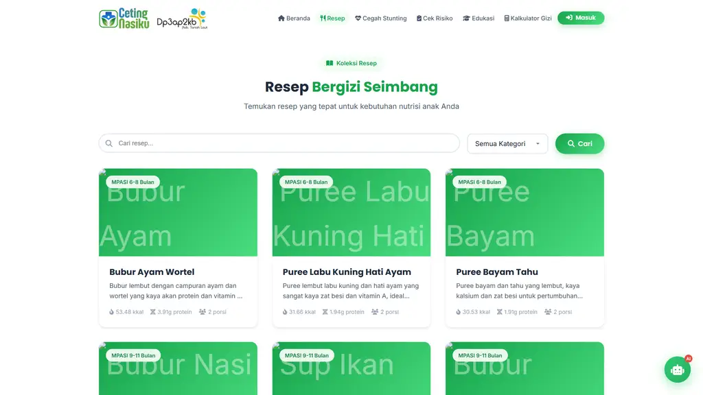
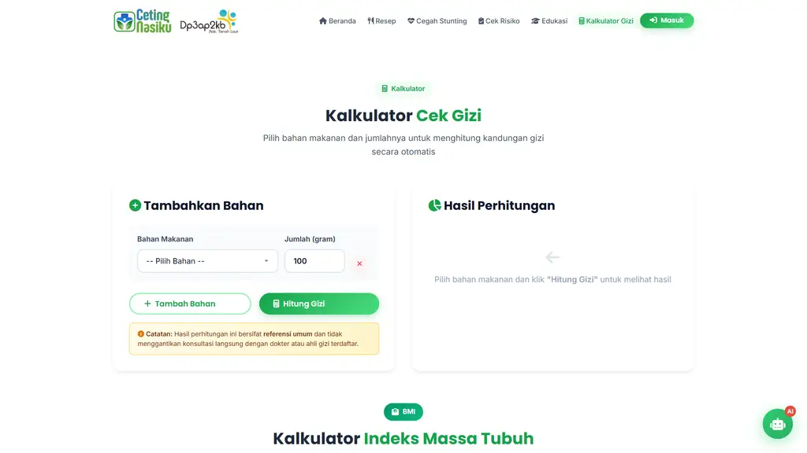
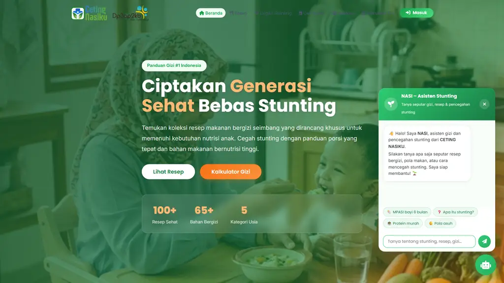
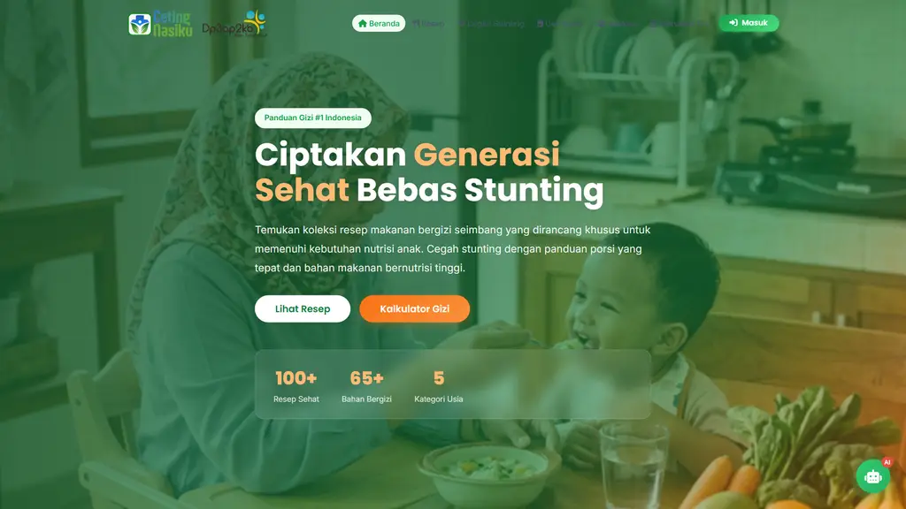
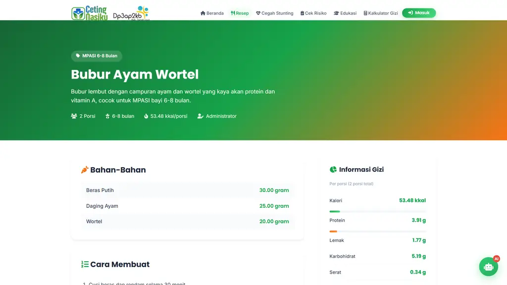
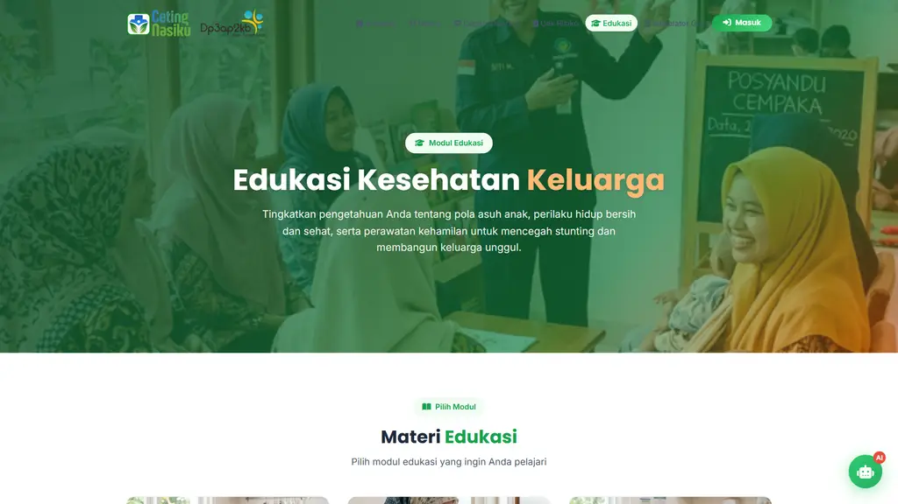
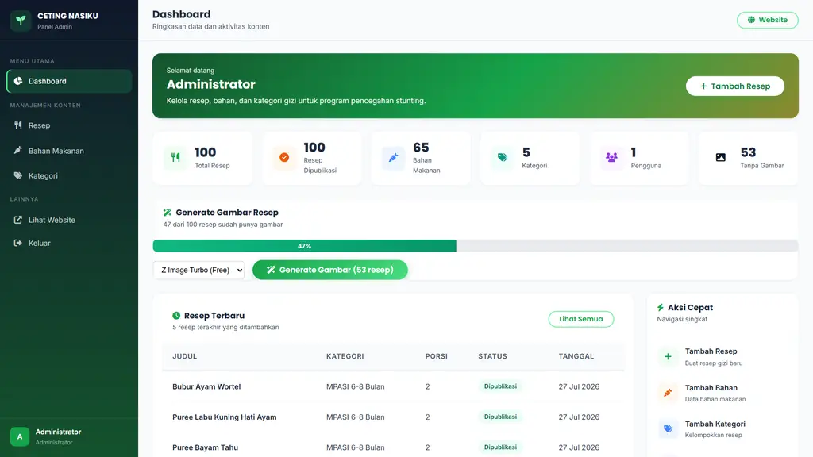

Video ini memaparkan perjalanan lahirnya CETING NASIKU — dari permasalahan nyata di lapangan hingga dampak yang diharapkan bagi keluarga Indonesia.
Masalah & kebutuhan
Gagasan yang dijaring
Kriteria & keputusan
Nilai bagi pengguna
Hasil yang diharapkan
Tingginya angka stunting dan rendahnya pemahaman gizi masyarakat menjadi dasar penciptaan inovasi. Stunting adalah gangguan tumbuh kembang akibat kekurangan gizi kronis — dampaknya berlangsung jangka panjang.
Periode 1.000 hari pertama kehidupan menentukan masa depan anak. Kelompok inilah yang menjadi pusat perhatian inovasi CETING NASIKU.
Membutuhkan asupan gizi yang tepat untuk mendukung janin dan mencegah stunting sejak dalam kandungan.
Membutuhkan panduan menu bernutrisi agar ASI berkualitas bagi tumbuh kembang bayi.
Anak usia 6 bulan – 6 tahun: masa MPASI dan pertumbuhan paling pesat yang harus dipantau gizinya.
Rumah tangga secara keseluruhan: pola asuh, perilaku hidup bersih dan sehat, serta kebiasaan makan keluarga.
Dari identifikasi masalah, tim menjaring berbagai gagasan solusi. Empat kandidat utama muncul sebagai jawaban atas kebutuhan masyarakat.
Database resep makanan bergizi berbasis bahan pangan lokal untuk bayi, balita, ibu hamil, dan menyusui.
Materi edukasi pola asuh, PHBS, gizi seimbang, dan perawatan kehamilan dalam format yang mudah dipahami.
Chatbot cerdas yang siap menjawab pertanyaan gizi dan stunting kapan saja, tanpa antre dan tanpa biaya.
Kalkulator kebutuhan gizi harian dan pemeriksaan risiko stunting yang bisa dilakukan keluarga secara mandiri.
Seluruh gagasan diuji terhadap indikator keberhasilan yang ditetapkan sejak awal perancangan konsep.



Informasi gizi dan resep dapat diakses publik kapan saja tanpa biaya.
Resep terjangkau dengan bahan pangan yang tersedia di sekitar rumah.
Materi pola asuh, PHBS, dan kehamilan yang mudah dipahami keluarga.
Kalkulator gizi & cek risiko untuk memantau tumbuh kembang anak sendiri.
Pertanyaan gizi dijawab cepat, tanpa antre dan tanpa malu bertanya.



Pendamping PKK, PPKBD/Sub-PPKBD, dan tenaga kesehatan memiliki materi terstandar untuk edukasi keluarga.
Kelola resep, bahan, dan kategori dalam satu dashboard — konten selalu mutakhir.
Media digital yang selaras dengan program penurunan angka stunting di tingkat desa/kelurahan.

Dampak dirancang berjenjang — dari perubahan pengetahuan, perilaku, hingga kontribusi pada indikator nasional.
Meningkatnya pengetahuan gizi masyarakat; akses informasi yang setara bagi keluarga di desa dan kelurahan.
Praktik pemberian makan yang lebih baik; pemanfaatan bahan pangan lokal; deteksi risiko stunting lebih dini.
Kontribusi nyata pada penurunan angka stunting melalui keterjangkauan, kemudahan akses, dan edukasi berkelanjutan.
Inovasi diciptakan dan dikembangkan secara bertahap dalam kurang lebih 5 bulan, tercatat pada repositori pengembangan aplikasi.
Berangkat dari kendala nyata: stunting, keterbatasan informasi, dan tidak adanya sarana mandiri bagi keluarga.
Gagasan dijaring dan diseleksi dengan kriteria jelas — keputusan dipadukan menjadi satu platform utuh.
Resep, edukasi, kalkulator, cek risiko, dan asisten AI dalam satu aplikasi gratis yang dapat diakses semua orang.
Indikator keberhasilan jelas: keterjangkauan, kemudahan akses, dan pemanfaatan pangan lokal untuk turunkan stunting.
CETING NASIKU adalah wujud nyata inovasi daerah untuk kesehatan generasi Indonesia — dari desa, oleh kader, untuk keluarga.